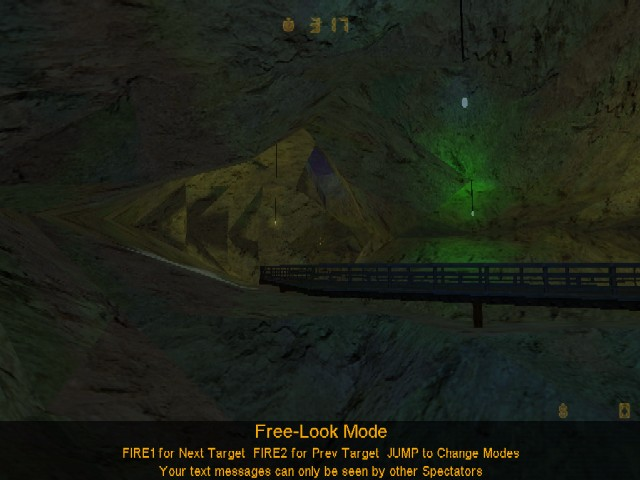
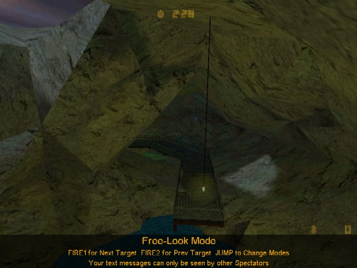

In this sample tutorial I will describe one of the best ways to create a cave in Terrain Generator. This tutorial also shows the general use of the Raise/Lower and Touch-Up tools as well as the smoothing pass.
First off we need to generate our starting terrain. Because this is only a small cave I chose 12 * 12 dimensions with the Length set to 128 units. Don't use any of the other generation options for this step.
Once you've got the terrain ready select the 'Touch-Up' tool. With it lock all the vertecies that you don't want to use for your cave, ie outline the shape of your cave by locking all the vertecies outside of it. To lock a vertex simply press the 'L' key when you have it highlighted. You can cycle through the selected vertex in a square by rolling your mouse wheel. Also locking lots of vertecies tends to slow the program down, to fix this you can choose not to highlight locked vertecies in the 'View-->Highlight' menu. Your final outline should look something like this:
Next alter the heights of the vertecies on the border of the outline with the 'Touch-Up' tool so that they form a uneven outline. Note you can use the 'Page Up' and 'Page Down' keys for greator control:
Now were going to make the bottom half of our cave. With the Raise/Lower tool make a rough outline of the shape of the caves base. Next run it through a smoothing pass (in the 'Map' menu) this will give you a good smooth general shape to work off of. Finally add some roughness back into the terrain with the 'Raise/Lower', 'Noise', or 'Touch-Up' tool (up to you). Your result may look something like this:
Now that the bottom of our cave is complete were ready to export it. In the 'File-->Export' menu select the 'Exportation Options'. I'd recommend you use the 'Best Fit' style and uncheck the 'Hints' and 'Sky Brushes'. Also make sure for the 'Direction' you have 'Flatten Bottom' selected. Now that your ready export it using the 'Export to .MAP File' command:
Next were going to take the terrain we made for the bottom of the cave and reuse it for the top. Simply take the 'Raise/Lower' tool and following the steps used before do the same thing only make it a hill instead of a valley. Your finished result may look something like:
Again were going to export the terrain only this time were going to set the 'Direction' to 'Flatten Top'. Once you've done that export the terrain again (only to a different file):
For this next step I'm going to be using the QuArK editor. However, this step does not require any special features and simply reading what I write should be enough for you WorldCraft users to follow. Start a new map in your editor and copy and paste the cave bottom and cave top into it. Then simply align the two together (because we locked the outer vertecies it'll be a perfect fit)! It should look something like this when your done:
Next we can clean it up a bit by deleting any unused triangles:
And last but not least we'll add some funky lighting, a walkway, and stick a little hole in the roof for looks. This is what my finished terrain looked like in Half-Life. Not bad eh?
{kind=link}

{kind=link}

{kind=link}
I've uploaded my finished map so you can take a look at it. Unfortunately the map is phrased in QuArK which means WorldCraft users will lose some texture alignment data when they view it. You can get it here (23kb zipped).
I just found tg and am reading your tutorials, and just thought i'd say that this is an old version of tg in this tutorial and is a lot different from the new version. I guess it really isn't important, i just thought i'd point it out.
Just thought i'd also say tg is a great tool. Thx!
It was v2.3.0 Beta, I've been meaning to update it but it still should get the job done as is.
Although this is a good tutorial, i dont understand the "Exportation" part towards the end
Hey nem,
Since you are apparently well versed in the ways of map making, I was wondering what you considered as the pros and cons of the various map making tools (Hammer vs. Worldcraft vs. QuArK)
I currently am trying to learn Hammer, but when I export your files to hammer .rmf format, they lose all their textures and the water disappears.
Also, is it easier for half-life to run a map made with a room cut out of a series of large triangles (as exported by your terrain editor) or as a set of walls?
any kind of general tips would be meditated upon daily.
Thanks in advance, Zoltan (n00b local chapter 133)
You shouldn't be losing your texture information when you open the .rmf files TG creates in Hammer. You do however need the same .wad files you use in TG to be open in Hammer.
TG exports triangles because it simplifies the whole process (triangles must be planar). Do not go splitting your walls up into triangles, it will produce more polygons then necessary and confuse CSG.
how do i hollow out the cave once i have the two halves put together?
The cave should be hollow if you set the exportation options correctly. TG 3.0.0 supports the same options.
P.S: this program is great
BTW TG is freaking awsome
Just an idea, but if you have a section of terrain that you'd like to invert, you could lock the rest of the terrain, then scale that section by -1.
New users can register here.